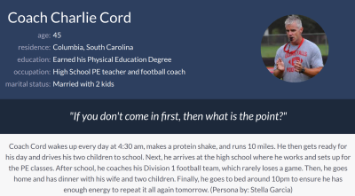
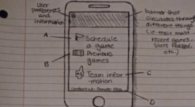

Stella Garcia's CSCE 190 Site

Problem Statement: Amateur Sports Teams
Amateur sport teams currently do not have an organized way to connect to other amateur sports
teams in order to play casual games. Our solution should provide these amateur athletes a way to
connect with each other and compete.

Affinity Diagram: Amateur Sports
My team (Team Gorilla) and I worked together to create this Affinity Board. We brainstormed about how to create the app we talked about in our problem statement. We organized our thoughts into different categories and color-coded them.

Personas: Amateur Sports
My team (Team Gorilla) and I worked together to create these personas. These personas are the types of people who would potentially use the app that we are creating. It includes their needs, wants, and levels of technical experience which would help us to develop an app that is not only useful, but usable for all.
Storyboards: Amateur Sports
My team (Team Gorilla) and I used our personas to create these storyboards. Each of them go through a specific type of person who would use our app and shows how said person would use them.

Sketches: Amateur Sports
My team and I each produced sketches of what we hope our app would look like. We went through different options for the app as well as the different pages a user may find on our app.